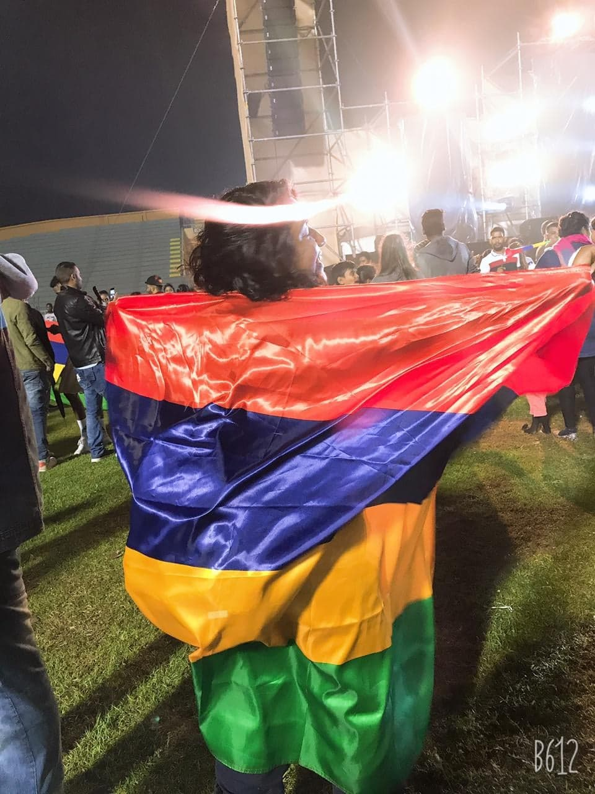

I remember as a kid people talking about Eric Milazar giving his best performance for the games. Even though I didn’t understand much, I always wanted to be part of that world. So that, when the occasion came 16 years later, I grabbed the opportunity and volunteered as a steward at the 10th JIOI Games 2019. Frankly, I didn’t know what I was embarking in, I had my apprehensions but I was far more excited.

When I first received the call from the Police Department, I didn’t really know if it was all serious until I went to the full day workshop at the Police Band Headquarters. There I knew the purpose of the stewarding. I learnt about the duties and responsibilities of stewards. A phrase I heard a lot from the tutors was; We are here to assist the Police. As stewards, we are meant to maintain decorum at the game sites, help the spectators and make sure that laws and order are being followed. After the group photo at the end of the session, I was proud to be part of the security team for the JIOI Games.
The first day was the opening ceremony at the Anjalay Stadium. There we met with the other stewards, everyone wearing the uniforms and the badges. We laughed together and made friends. But what marked me was seeing all the athletes, the persons involved and all the fans making the opening ceremony a success. Looking at the flame along with the flags of the different islands participating, the wonderful show by our local artists and YES, the fireworks! It was the beginning of a great journey. I got home all hyped up and couldn’t stop talking about it to everyone. The next day, we were posted at different sites and I was posted at the New George V Stadium for the Reunion VS Mayotte match. It was incredible to able to help the police with the entry of the VIPs and fans at the gates along with the maintenance of the discipline at the stadium during the match.
Stewarding at JIOI has allowed me to gain better confidence on myself and given me the diplomacy to confront crowd and tackle any problem without difficulty. It has showed us to work as a team helping people we do not even know, working towards a common purpose; making the JIOI a success. Moreover, I have assisted games such as Basketball, Table Tennis, Badminton and Football. There has been moments of joy, moments when I had to stand strict on my decision, moments where I had to manage things on my own but there was also moments of tears. I remember for the finals of Football; Mauritius VS Reunion Island, after Mauritius had lost the match, I couldn’t retain my tears and they were rolling down my cheeks uncontrollably. I know I had to be impartial and not supporting any team, but…
An instant that gave me chills when, Mauritius was announced as the Winner of the 10th JIOI Games 2019 and there was the Mauritian National Anthem playing. The whole crowd was singing along as one. There was no race, no religion no age. That was everyone was just Mauritian and game lovers.
Stewarding was a lifetime experience and I surely do look forward for more opportunities like that. It was a proud moment in my life for having been part of the backbone of this huge event.